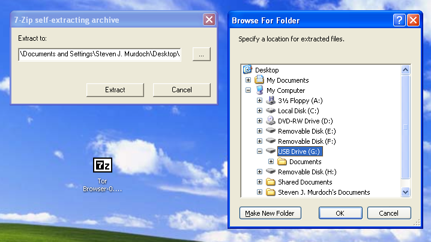
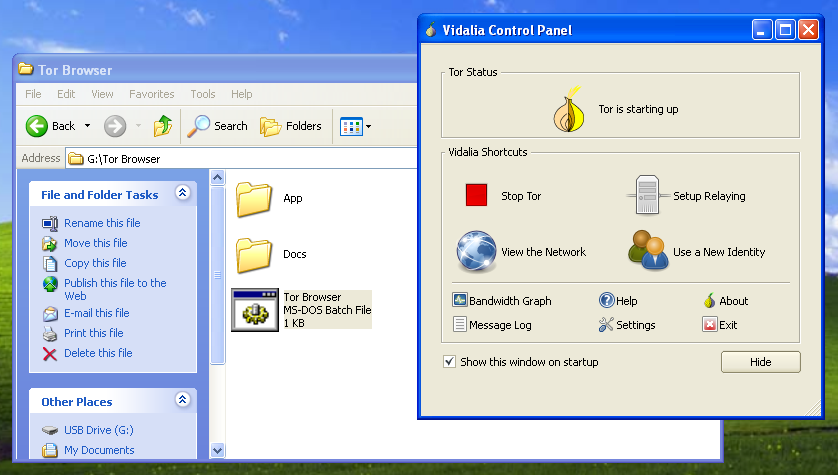
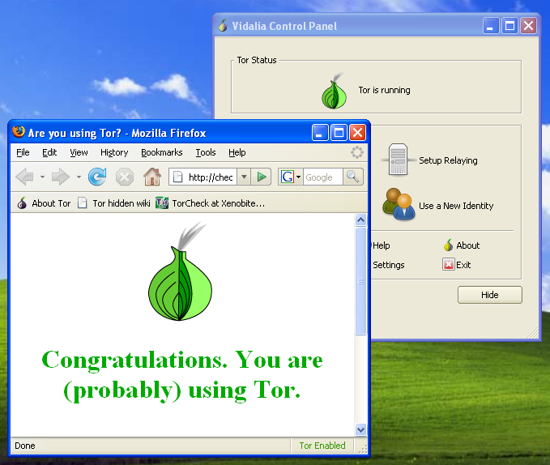

Tor Browser Bundle
Download
Tor Browser Bundle for Windows (version 0.0.5, English, 13 MB)
Extraction
Double click on the file downloaded above. Click on the button labelled ... and select where you want to extract the bundle (either the hard disk or a USB pen drive), then click OK. At least 50 MB free space must be available in the location you select.
Click Extract to begin extraction. This may take a few minutes to complete.

Usage
Once extraction is complete, open the folder Tor Browser from the location you extracted the bundle.
Double click on the Tor Browser application (it may be called Tor Browser.bat on some systems.)
The Vidalia window will shortly appear.

Once Tor is ready, Firefox will automatically be opened.

Once you are finished browsing, close any open Firefox windows. Vidalia and Tor will automatically close. For privacy reasons, the list of webpages you visited and any cookies will be deleted.
Comments and suggestions
The Tor Browser Bundle is under development and not yet complete. To discuss improvements and submit comments, please use the or-talk mailing list.
More information
What is Tor and why do I need it? To learn more about Tor, visit the Tor Project website.
What is in the Tor Browser Bundle? It contains Tor, Vidalia and Firefox (learn more).
How can I make my own bundle? To download the source code and learn how to build the bundle yourself, read the build instructions.